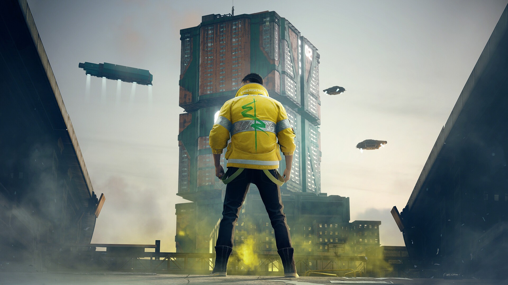
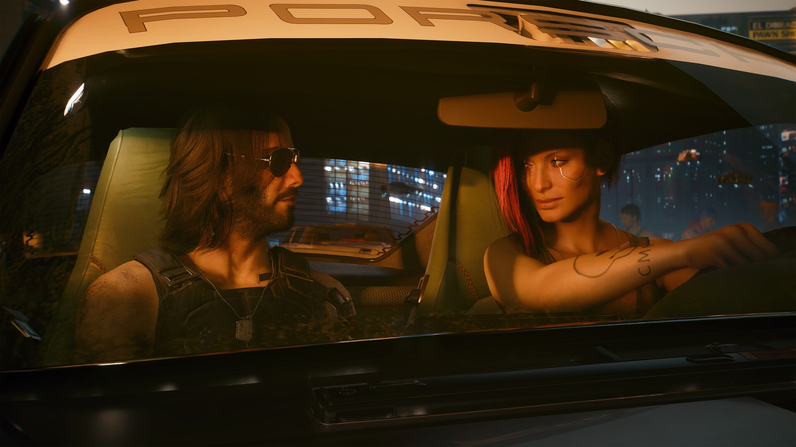
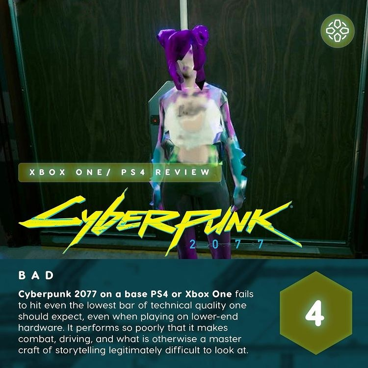
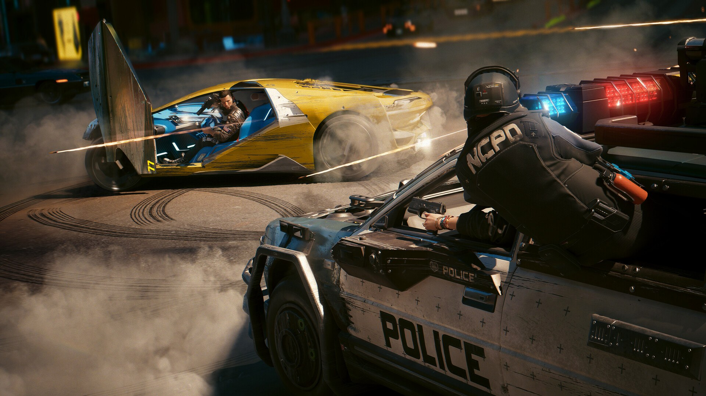
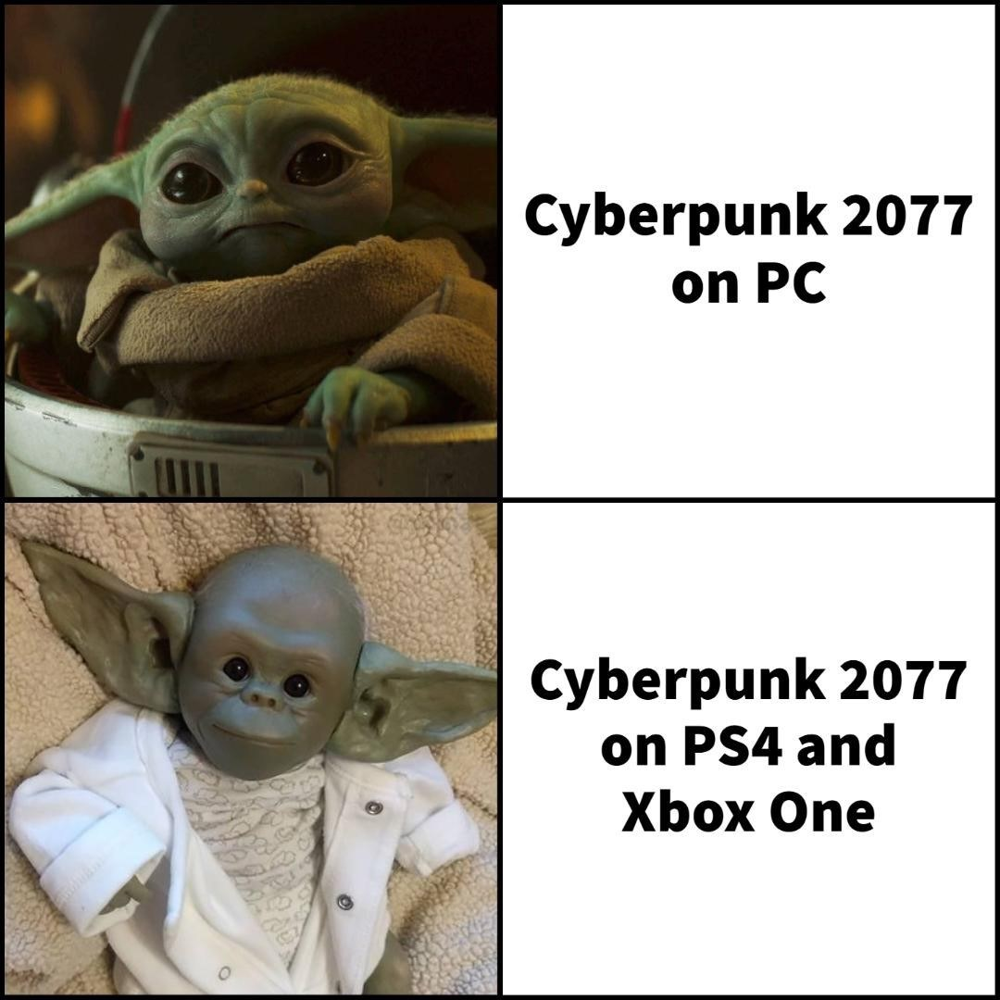
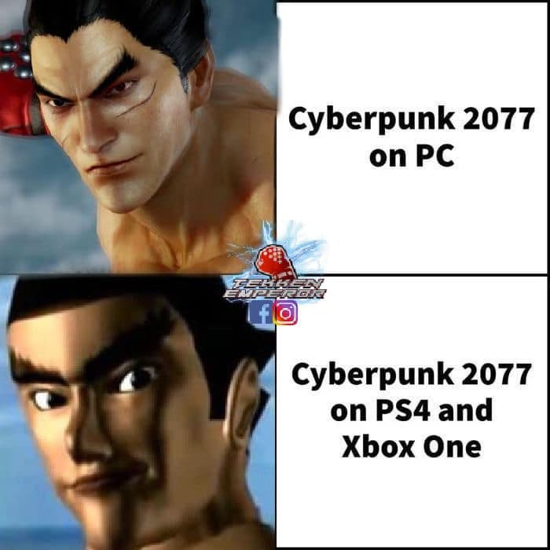
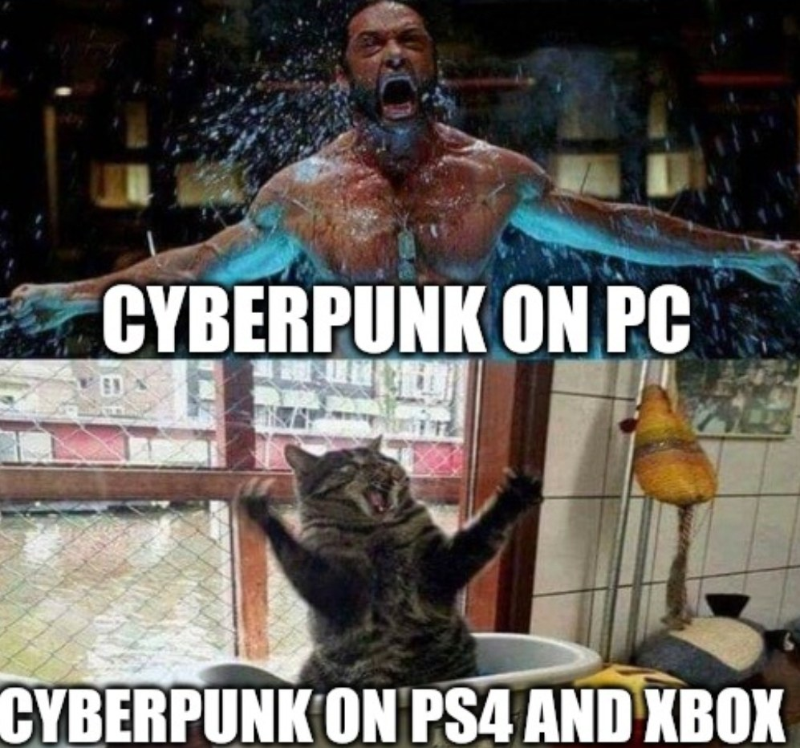
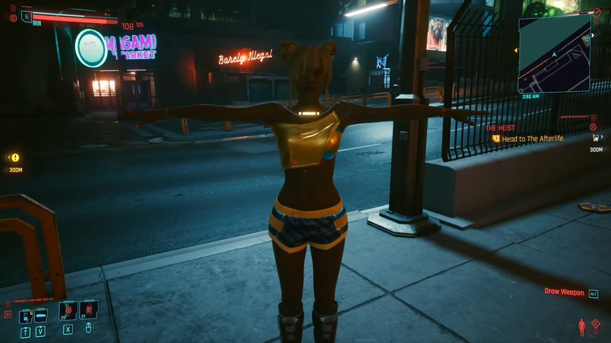
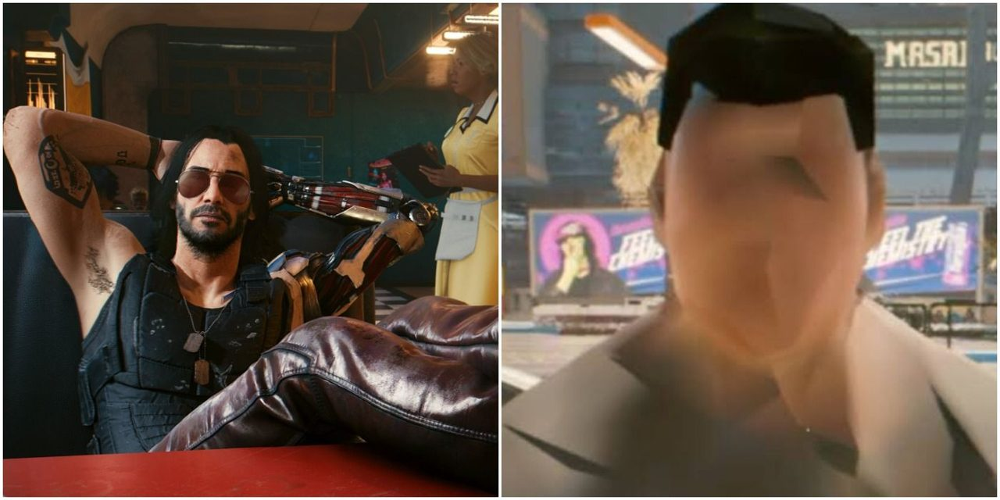
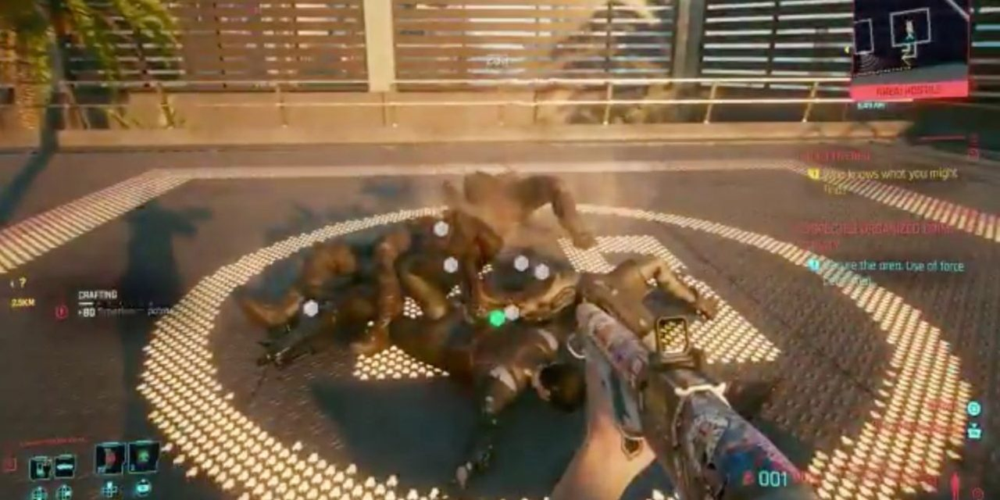
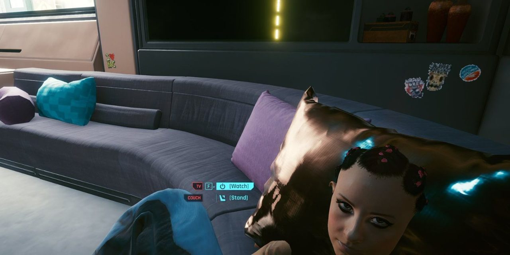
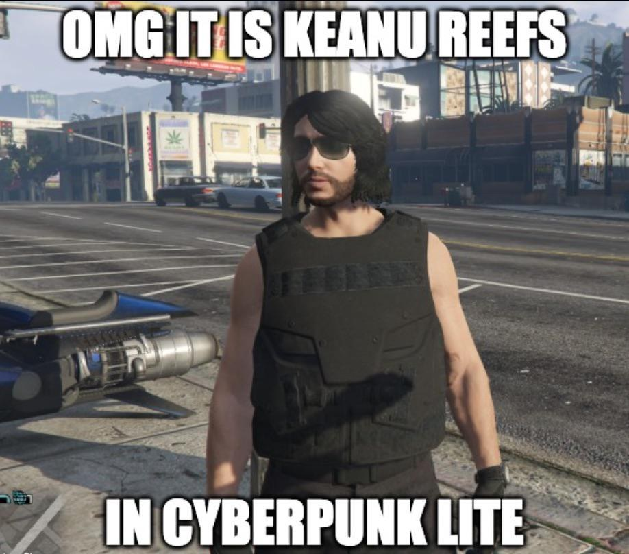
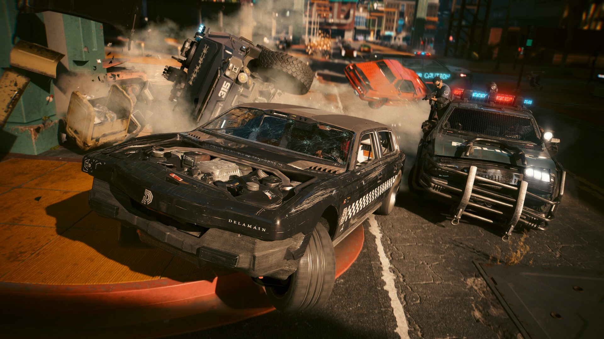
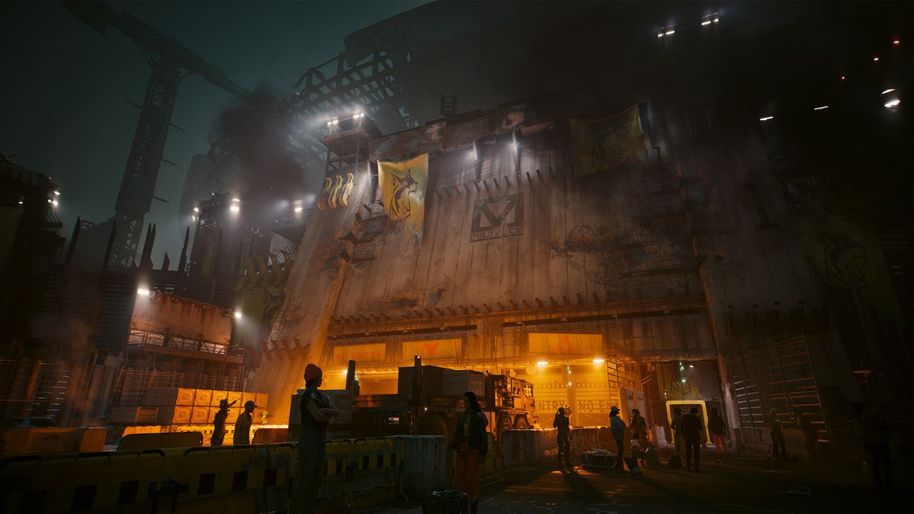
Trabajar a un ritmo que se pueda aguantar siempre, no solo una semana.
“Forma indefinida”Nunca horas extra dos semanas seguidas. Si pasa, el plan está mal.
Kent Beck · Extreme Programming · 199970 horas a la semana producen lo mismo que 55. Más horas ≠ más trabajo.
J. Pencavel · Stanford · 2014Ronda 1: 45 s.
Rondas 2 y 3: otra mano.
3 rondas de 30 s.
Mano normal.